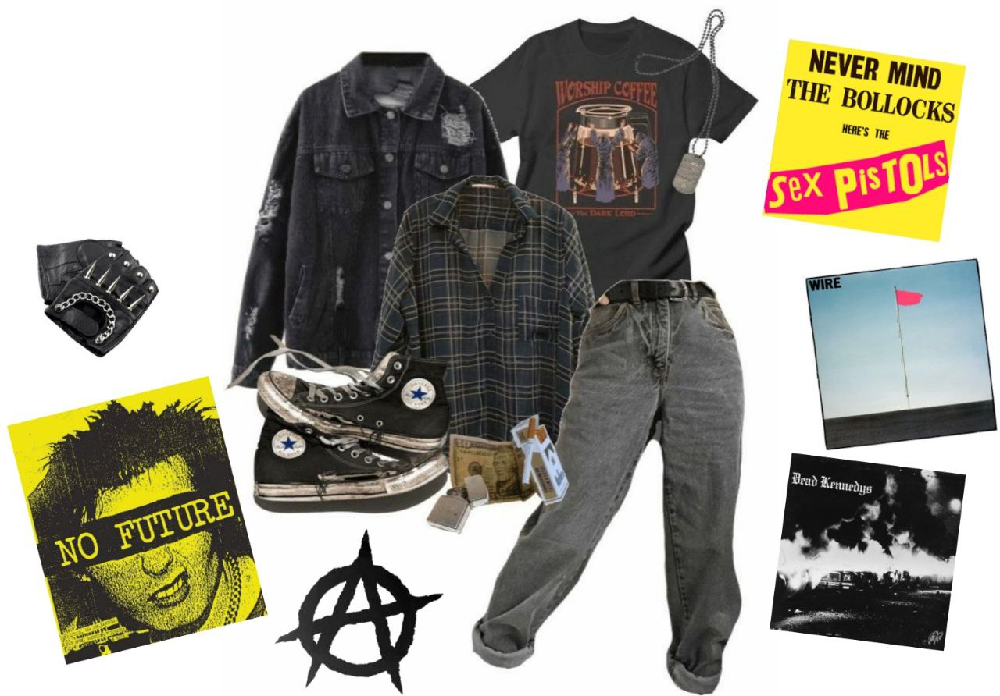

Панки (англ. punk — «хулиган»)

Сформировались в конце 60х как приверженцы различных политических взглядов, но в большинстве своём они являются приверженцами социально направленных идеологий и прогрессивизма. Распространенными воззрениями являются стремление к личной свободе и полной независимости, а также стилю DIY, что можно трактовать как "сделай сам". Как и прошлые представители субкультур, панки привержены к своему новому жанру рок-музыки - панк-року. Звучащий сыро и грубо, сыгранный на паре аккордов энергичный жанр зачастую либо политизированный, либо наоборот упрощенный в лирической части. Самыми яркими фигурами можно назвать коллективы Sex Pistols, The Ramones и The Stooges
Философия панка
20 классических песен панк-рока